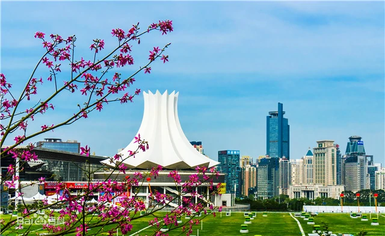

南宁，简称“邕”，别称绿城、邕城，是广西壮族自治区辖地级市、首府、北部湾城市群核心城市，国务院批复确定的北部湾经济区中心城市、西南地区连接出海通道的综合交通枢纽。
南宁市是中国—东盟博览会、l中国—东盟商务与投资峰会长久举办地，是广西北部湾经济区核心城市，对广西沿海城市发挥着中心城市的依托作用，对华南、西南经济圈发挥着枢纽城市的连接作用，对东南亚各国发挥着中国前沿城市的开放作用，是中国面向东盟各国的区域性国际城市。